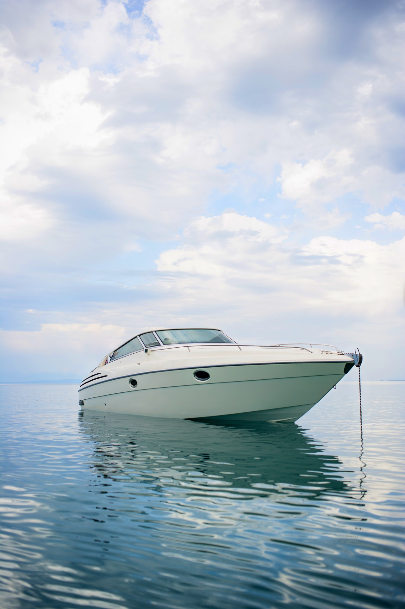

In the world of corporate entertaining, differentiation is everything. Your clients have been to every upscale restaurant, rooftop bar, and boutique hotel in Boston. They have attended countless conferences in windowless ballrooms. When you invite them aboard a private yacht, you immediately signal that this is different - this is special.
A yacht charter transforms a standard business interaction into an experience. The change of environment breaks down formal barriers, encourages authentic conversation, and creates memories that strengthen professional relationships in ways that a conference room never could.
Why Yacht Charters Work for Corporate Events
The psychology of taking business to the water is powerful. When you remove people from their usual corporate environment and place them in a beautiful, relaxed setting, several things happen naturally:
- Barriers dissolve. The informal atmosphere of a yacht encourages genuine connection. Titles and hierarchies feel less rigid when everyone is sharing a sunset view.
- Attention is focused. With no exits, competing events, or distractions, your guests are fully present. A 3-hour yacht cruise delivers more quality face time than a full day at a conference.
- The experience is memorable. In a world of forgettable corporate functions, a yacht event stands out. Your clients will remember the golden light on the water, the Boston skyline, and the company they kept.
- It demonstrates values. A yacht charter communicates taste, success, and the willingness to invest in relationships. It shows your clients and team members that they matter.
Types of Corporate Yacht Events
Client Entertainment
The most common corporate charter. Host key clients, prospects, or partners for an afternoon or evening on the harbor. The intimate setting facilitates relationship building that accelerates deal-making. Pair it with premium catering and a stocked bar for maximum impact.
Team Building
Take your team out of the office and onto the water. Team-building charters can include sailing challenges, fishing competitions, scavenger hunts around the harbor islands, or simply a relaxed afternoon that lets colleagues connect as people. Teams that share experiences outside of work perform better in the office.
Product Launches
Launch a new product or service in a setting as impressive as your innovation. Yacht-based launches offer a captive audience, stunning visual backdrops for photography and video, and the exclusivity that creates buzz. Tech companies, luxury brands, and financial firms have all used our fleet for successful launch events.
Board Meetings and Retreats
Move your board meeting to a yacht for a productive and refreshing change of pace. Our larger vessels offer private meeting rooms with A/V equipment, Wi-Fi, and comfortable seating. The inspiring environment encourages creative thinking, and the natural break between meeting sessions and socializing creates a healthy rhythm.
Holiday Parties
Replace the predictable hotel ballroom with a yacht for your annual holiday celebration. Summer company outings and end-of-year parties on the water create traditions that employees look forward to year after year. For party planning details, see our yacht party planning guide.

Planning a Corporate Yacht Event
Choosing the Right Vessel
For corporate events, we recommend vessels with a combination of indoor and outdoor space. Climate-controlled interiors ensure comfort regardless of weather, while open decks provide the scenic experience your guests expect. Our charter specialists will recommend specific vessels based on your group size, event format, and technical requirements. Start with our yacht sizing guide for general recommendations.
A/V and Technology
Many of our larger yachts come equipped with presentation screens, projectors, Bluetooth audio systems, and Wi-Fi. For product launches and meetings, we can arrange additional A/V equipment, podiums, and microphones. Our events team coordinates with your IT staff to ensure seamless technical execution.
Catering for Business
Corporate catering on a yacht strikes a balance between elegance and ease. For meetings, we recommend working lunches with plated service or curated grazing boards. For entertainment events, a combination of passed appetizers and food stations keeps guests comfortable without imposing a rigid meal structure. Our premium bar packages include top-shelf spirits, craft cocktails, and an extensive wine list.
Branding and Customization
We offer comprehensive branding options for corporate charters: custom welcome signage, branded napkins and barware, logo-printed menus, and gift bags for departing guests. For product launches, we can integrate your brand throughout the vessel with custom lighting, display installations, and themed decor.
Corporate Event Logistics
Our corporate events team manages every logistical detail so you can focus on your guests and business objectives:
- Pre-event planning: Your dedicated coordinator works with you on every detail, from catering selections to seating arrangements, 4-8 weeks before the event.
- Vendor coordination: We manage relationships with caterers, entertainment, photographers, florists, and A/V providers. One point of contact for everything.
- Guest communications: We provide detailed boarding instructions, parking information, and dress code guidance that you can share with your attendees.
- Day-of management: An events coordinator is present from setup through departure, ensuring flawless execution.
- Follow-up: Professional photos delivered within 48 hours. Post-event survey available for your planning records.
Budget Considerations
Corporate yacht charters in Boston typically range from $3,000 for an intimate executive dinner on a mid-size yacht to $30,000+ for a full-production event on a mega yacht. Most companies find that the cost compares favorably to premium restaurant buyouts and hotel event spaces, while delivering a far more impactful experience.
Many of our corporate clients allocate their yacht charter from their client entertainment, team building, or marketing events budgets. The investment consistently delivers returns in the form of stronger client relationships, improved team morale, and media-worthy brand moments.
Case Study: A Boston Tech Company's Client Appreciation Event
A fast-growing SaaS company headquartered in Cambridge hosted 45 of their top clients aboard an 85-foot motor yacht for an evening harbor cruise. The event featured a craft cocktail bar, a raw bar with locally sourced oysters and lobster, and a live jazz trio. During a brief 15-minute presentation on the main deck, the CEO previewed an upcoming product feature while the Boston skyline glowed behind her.
The result: three clients who had been evaluating competitors renewed their contracts within two weeks. The company's head of sales attributed those renewals directly to the relationships strengthened during the yacht event. The cost of the charter was a fraction of the revenue those renewals generated.
Elevate Your Next Corporate Event
Our corporate events team specializes in creating impactful business experiences on the water.
Plan Your Event